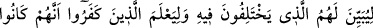
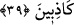
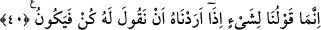

demektir.” Yâni yeminlerinde gayret sarf ederek, son derece aşırı davranarak Allah’a
yemin ettiler, yemini şiddetinde ve kuvvetinde sona vardılar, demektir.
Ebü’l-Leys Tefsîri’nde der ki: “Allah adına yemin eden herkes, kuvvetli yemin
etmiştir. Çünkü müşrikler putlara ve atalarına yemin ederlerdi. Allah adına yemin
etmeyi “en güçlü yemin” diye isimlendirirlerdi.”
“Aksine,” Allah onları diriltir “bu O’nun bizzat kendisine karşı gerçek bir
vaadidir.” Allah bu vaadi sâbit bir vaad olarak vaat etmiştir. Allah’ın vaadinden
dönmesi imkânsız olduğu için onu gerçekleştirmek O’na düşer.
“Fakat insanların çoğu” diriltileceklerini “bilmez.” Onların diriltilmenin
olmayacağını söylemelerinin sebebi, Allah Teâlâ’nın ilim, kudret, hikmet ve diğer
kemâl sıfatlarıyla ilgili vasıflarını, hakkında câiz olan ve olmayan şeyleri, O’nun kâinâtı
var etmesinin sırrını ve bu var etmekten nihâî maksadın ne olduğunu bilmemeleridir.
39. Hakkında ihtilaf ettikleri şeyi onlara açıklaması ve kâfir olanların da
kendilerinin yalancılar olduklarını bilmeleri için (Allah onları diriltecek).
Ölümden sonra dirilme, amellerinin karşılığının verilmesi, her şeyi beyan eden
şerîatın getirip de onların muhâlif oldukları bütün şeyler “hakkında” mü’minlerle
aralarında “ihtilâf ettikleri şeyi onlara açıklaması” ‘Açıklama’ daha önce kapalı olan
şeyi açığa çıkarmak anlamınadır. Yâni Allah, mü’min olsun, kâfir olsun bunu
kendilerine göstermek için ölümlerinden sonra onları diriltecektir. Mü’minler, her ne
kadar bu hususları bilmiş olsalar da, hakîkat o anda gözler önüne serilince durum
tamâmen ortaya çıkmış olur. Böylece onların da ilimleri, yakîn mertebesine ulaşır.
Çünkü halleri olduğu gibi müşâhede ve hakîkî sûretleriyle muâyene etmeleri
gerçekleşir.
“Ve kâfir olanların da” şirk koşarak, öldükten sonra dirilmeyi inkâr ederek,
kabirlerinden çıktıkları zaman O’nun hak olan vaadini tekzîb ederek Allah Teâlâ’yı
inkâr edenlerin de “kendilerinin” “Allah, öleni diriltmez” ve benzeri sözlerinde
“yalancılar olduklarını bilmeleri için” Allah her öleni mü’min olsun kâfir olsun
diriltir. Bunda, ölümden sonra dirilmenin hikmetine işâret vardır. O da hak ile bâtılın
belli olması, îmân edenle inkâr edenin birine sevap diğerine ceza verilmek sûretiyle
aralarının ayrılmasıdır.